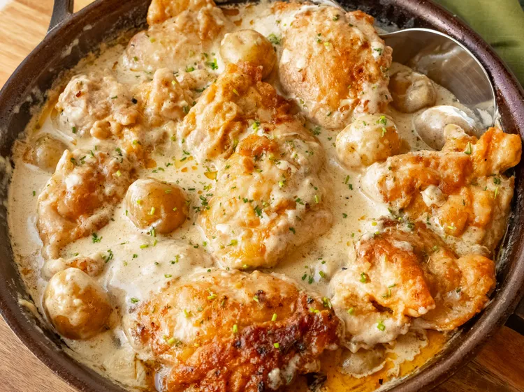

Home
Creamy One-Pan Chicken and Potatoes

Description
This creamy one-pan chicken and potatoes features tender chicken thighs and baby potatoes simmered in a rich, flavorful Boursin cream sauce. Simple enough for any night of the week, it comes together in a single skillet for easy cleanup. Plus, it's easy to customize with swaps like chicken breasts, Yukon Gold or red potatoes, or cream cheese, and add-ins like spinach and mushrooms.
Ingredients
- 1 1/2 teaspoons salt, divided
- 1/2 teaspoon ground black pepper
- 1 teaspoon onion powder
- 1/2 teaspoon cayenne
- 1/2 teaspoon paprika
- 6 skinless boneless chicken thighs
- 1/2 cup all-purpose flour
- 1/4 cup cooking oil, plus more as needed
- 1/2 shallot, diced
- 1 teaspoon minced fresh garlic
- 1 1/2 cups chicken broth or stock
- 1 1/2 pounds mini gold potatoes
- 1 1/2 cups heavy cream
- 1 (5.3 ounce package) shallot and chive flavor Gournay cheese, such as Boursin
- fresh chives for garnish
Steps
- Combine 1 teaspoon salt, black pepper, onion powder, cayenne, and paprika in a small bowl. Pat chicken thighs dry with paper towels, and rub seasoning mixture into both sides of chicken pieces.
- Place flour in a resealable plastic bag, and add seasoned chicken pieces. Move pieces around inside the sealed bag until coated with flour. Discard any unused flour.
- Heat cooking oil in a large nonstick skillet over medium-high heat. When oil is hot, carefully add chicken, being careful not to overcrowd the skillet. Brown chicken on both sides, 3 to 5 minutes per side. Cook in batches, if necessary, and add a bit of oil if the skillet seems dry. Remove chicken pieces to a plate and keep warm.
- Reduce heat to medium and add diced shallots to the skillet. Cook until tender, about 3 minutes. Add minced garlic, and cook and stir for 30 seconds.
- Stir in chicken broth and bring to boil, stirring up any browned bits from the bottom of the skillet
- Add potatoes, and stir in remaining salt, if desired. Bring to a boil, cover, and reduce heat to medium-low. Cook about 20 minutes, stirring occasionally. Potatoes should be fork tender, but not fully done.
- Stir in cream, and break up Gournay cheese into the sauce. Stir until cheese is melted.
- Return cooked chicken to the skillet, nestling down into the potatoes. Add any accumulated juices and gently stir. Return cover and simmer until potatoes are full cooked, and chicken is no longer pink at the center, about 5 minutes more. An instant read thermometer inserted near the center of chicken should be read 165 degrees F (74 degrees C).
- Garnish with fresh chives, and serve immediately.